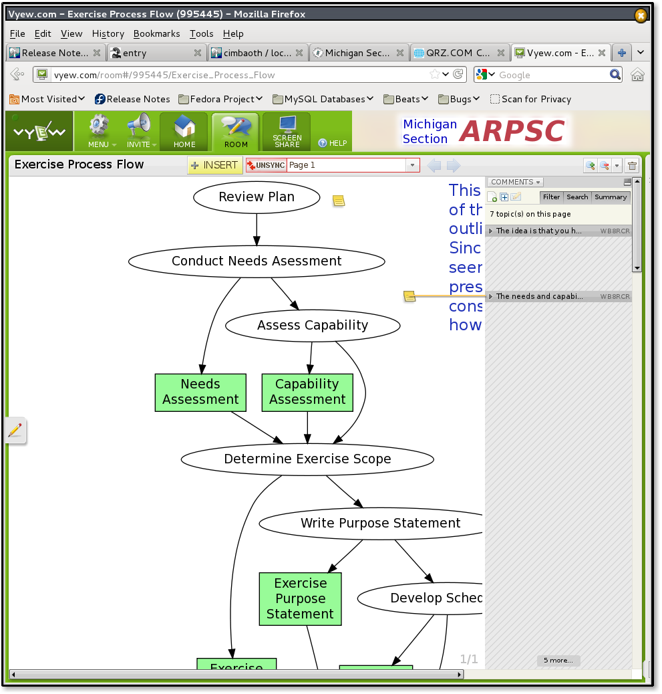

Prev
Next
6.5. Online Meetings
Meetings within smaller groups are often held remotely. Simple phone conferences are frequently used. In addition,
Vyew
allows documents to be shared online during these phone conferences.
An example of an online meeting in Vyew is shown below:

Vyew
Figure 7. Example Online Meeting
Prev
6.4. Microblogging
Up
Home
Next
6.6. Wiki